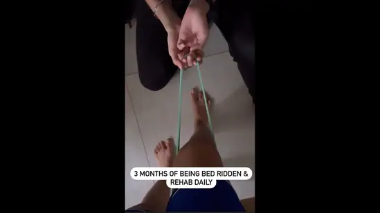

Dhanashree Verma shared a video on her Intagram handle to update her fans about her rehab journey.
YouTuber and choreographer Dhanashree Verma underwent knee surgery in September this year due to an ACL ligament tear while dancing. Since then, she has been keeping her fans posted about her health. Verma now took to her official, verified Instagram handle to share a video montage that captures her rehab journey after being bedridden for three months and some glimpses from her recent trip to Australia. She also added a heartfelt note concerning her life post-surgery and how she embraced the harsh reality and kept herself sane. She further thanked her friends and physio for being there for her during these testing times.
"This year has been really harsh & life changing but had nothing in my power to change it. Just had to embrace it and keep myself sane. But I have to mention that my happy moments were definitely created by some people in my life. My travel gang @devishashetty_ @ritssajdeh @devarshi07 @athiyashetty @nupurnagar @mittaliparulkar_ for being there for me," wrote Dhanashree Verma while sharing the video on Instagram. She also thanked her physio team. "The physio therapy team @physio_liveactive & Yogesh sir. Thank you. All the little things in life do matter," she added